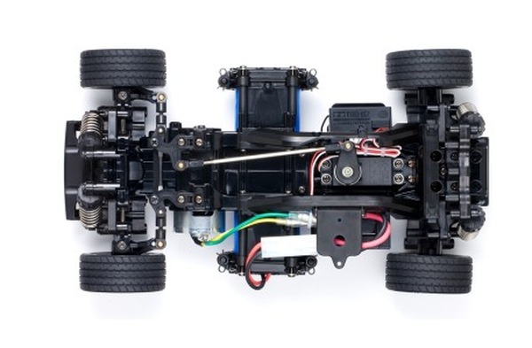

タミヤ M-05

引用元画像:タミヤ公式サイト
📋 基本情報
| メーカー | タミヤ（Tamiya） |
|---|---|
| 機種名 | M-05 |
| 型番 | 58443（Honda CR-X）、58593（Mini Cooper）など |
| 発売時期 | 2009年6月27日 |
| 生産状況 | 生産終了 |
| カテゴリー | ラジコンカー（1/10スケール 電動RCカー） |
| サブカテゴリー | Mシャーシ（コンパクトFF駆動ツーリングカー） |
📏 シャーシスペック
| シャーシ長 | S: 300mm / M・L: 307mm |
|---|---|
| 全幅 | 165mm |
| ホイールベース | S: 210mm / M: 225mm / L: 239mm（3段階調整可能） |
| トレッド | 前後とも138mm |
| フレーム | 樹脂製セミモノコック |
⚙️ 駆動系
| 駆動方式 | フロントミドシップモーター・前輪駆動（FF） |
|---|---|
| デフギヤ | 3ベベルデフ |
| ギヤ比 | 5.8:1 |
| モーター | 540タイプ |
🔧 サスペンション
| 形式 | 4輪ダブルウィッシュボーン独立懸架 |
|---|---|
| ダンパー | CVAオイルダンパースーパーミニ（クリヤー仕様） |
| ステアリング | 3分割ワイパー式 |
💡 特徴
M-03の発展型として登場
- M-03シャーシの改良版として2009年に登場
- 軽量・スリムで強度のある樹脂製セミモノコックフレームを採用
- FF駆動（前輪駆動）による独特のハンドリング特性
最適化された設計
- ギヤボックス、モーター、バッテリーパック、受信機、サーボ、スピードコントロールを戦略的に配置
- 重量配分を最適化し、低重心化を実現
- 4輪ダブルウィッシュボーン独立懸架で安定した高速コーナリング
- 3分割ステアリングリンケージによる安定したコーナリング性能
高い汎用性と調整性
- ホイールベース3段階調整可能（210mm / 225mm / 239mm）
- リヤサスペンションパーツの位置を変更するだけで簡単に調整
- 多彩なボディ選択肢に対応（Mini Cooper、Honda CR-Xなど）
- 各キットには車種専用のホイールとトレッドパターンタイヤが付属
コンパクトながらパワフル
- 1/10スケールより小型ながら540サイズブラシモーターを採用
- CVAオイルダンパースーパーミニで優れた減衰特性を実現
- コンパクトなMシャーシながら本格的な走行性能
🔧 ぽすとそに工房での修理実績
修理難易度
★★★☆☆（中程度、パーツ入手に注意）
よくある故障・注意点
- 2009年発売の古いシャーシのため、パーツの入手が困難になっている場合がある
- FF駆動特有のフロントギアボックスへの負荷が大きい
- CVAオイルダンパーのオイル漏れや減衰力の低下に注意
- フロントサスペンション周りの摩耗が進みやすい
修理のポイント
- FF駆動特有のフロントギアボックスのメンテナンスが重要
- CVAオイルダンパーのオイル交換を定期的に実施
- 3分割ワイパー式ステアリングの調整がハンドリングに直結
- セミモノコックフレームの剛性を活かした整備が必要
- M-06との互換パーツも多いため、代替品で対応可能な場合もある
その他の特徴
- M-05 Ver.II ProやM-05RAなどのアップグレード版も展開
- 多彩なボディバリエーション（Mini Cooper、Honda CR-X、Citroen 2CVなど）
- FF駆動ならではの軽快なハンドリングを楽しめる
- コンパクトなサイズで室内走行にも最適